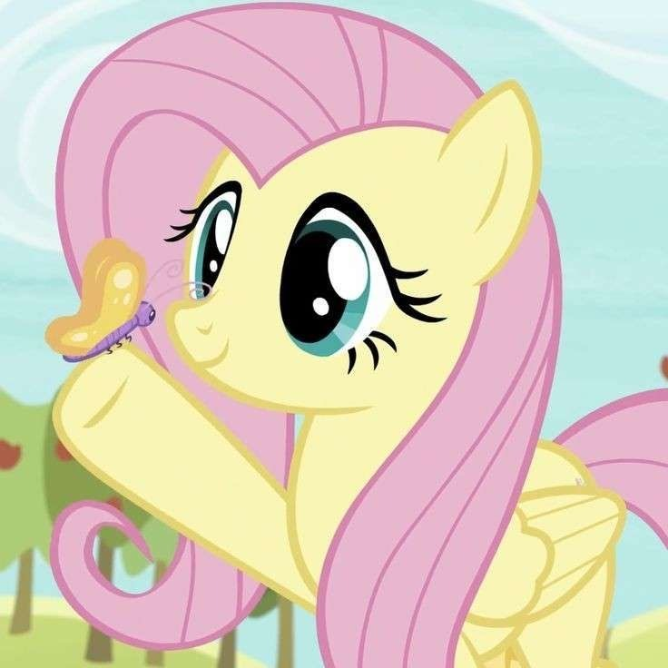
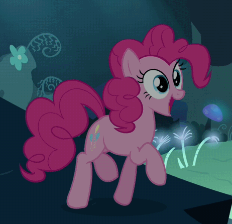
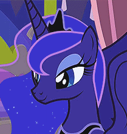
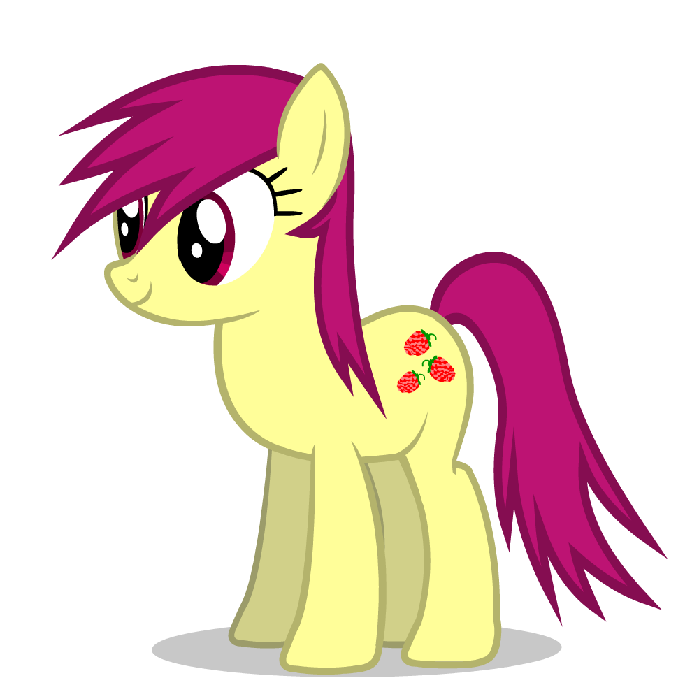

Hello, I'm Rakan Haddad or as I go by online, ForgeMan417! I'm the game developer, artist and hobbyist. MareDare, a game series about a berry loving mare named Merry Berry is my most well known piece of work! If you want to know more about MareDare, please visit the website for my company, Rakan Haddad Software! I enjoy watching MLP, playing video games, making art and browsing the internet
My favorite ponies are Fluttershy, Pinkie Pie and Luna!



Merry Berry, the star of the MareDare game series by me.

Lucie The Teenage Fox, a teenage fox character that I created. She's my fantasy ;)